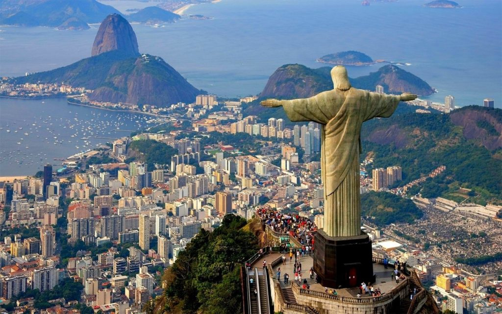
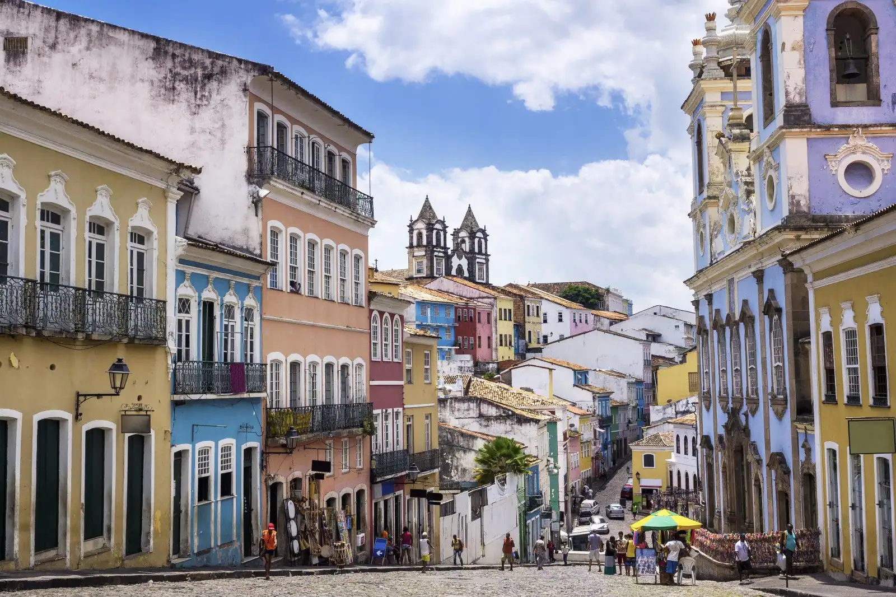
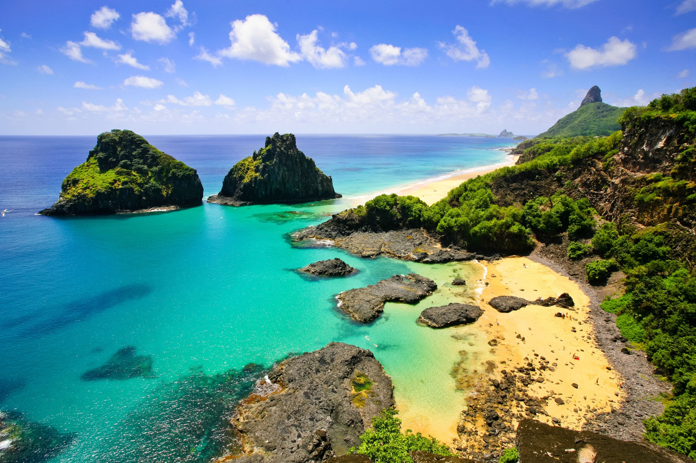

O Brasil é um país rico em natureza onde tudo que é simples pode se tornar uma obra de arte.
Cristo Redentor-RJ
Cristo Redentor é uma estátua art déco que retrata Jesus Cristo, localizada no topo do morro do Corcovado, a 709 metros acima do nível do mar, com vista para parte considerável da cidade brasileira do Rio de Janeiro. Feito de concreto armado e pedra-sabão, tem trinta metros de altura (uma das maiores estátuas do mundo), sem contar os oito metros do pedestal. Seus braços se esticam por 28 metros de largura e a estrutura pesa 1145 toneladas.
Centro Histórico-BA
O Centro Histórico de Salvador é formado basicamente por edifícios dos séculos XVI ao XIX, se destacando os conjuntos monumentais da arquitetura religiosa, civil e militar.
Fernando de Noronha-PE
Fernando de Noronha é um lugar onde a natureza ganhou contornos surpreendentes. A geografia privilegiada tem o mais belo conjunto de ilhas do Brasil — são mais de 7 mil quilômetros de litoral e 21 praias de beleza estonteante, o cenário perfeito para desfrutar de momentos inesquecíveis.
outra pagina